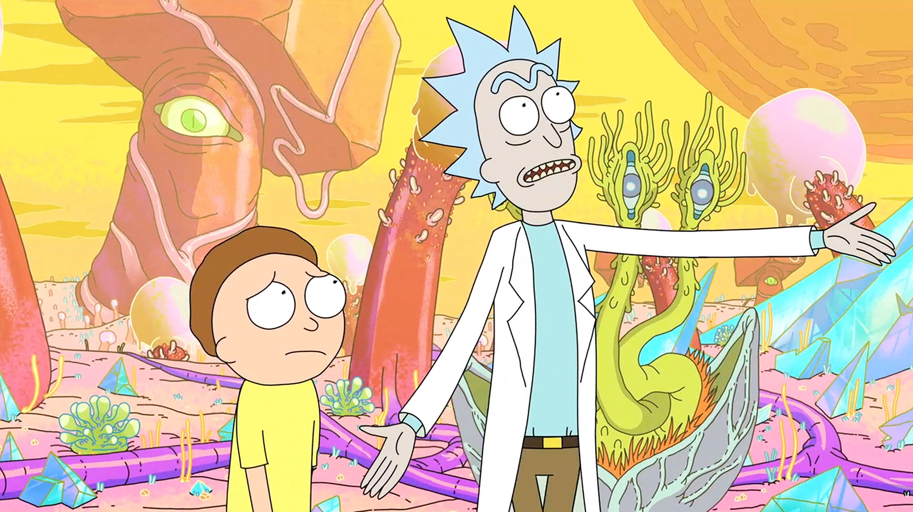

About Rick
Rick is a mad scientist who drags his grandson, Morty, on crazy sci-fi adventures.
Rick and Morty
Rick's Characteristics
- Incredible Genius
- Alcoholic
- Egoist
- Rude
- Sociopath
Rick's Friends
Rick has a few friends, none of which are from Earth. Click on the links below to read more about them: